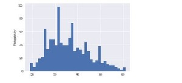

Projects
Spider Package Manager
{kind=link}
- Designed and developed a package manager for Windows OS with security permissions.
- Built to automate the process to download, install, uninstall, update the software and fetch the software list.
- Used Stack data structure to store software list. Built a module to uninstall the recently installed software.
- Built a module to detect the system architecture and install software, install previous and latest versions of the package. Click the demo button to watch the demo.
Languages Used: Python.
Modules/Tools Used: Selinium,Urllib,Wget,Beautiful soup.
View SourceCode Demo{kind=link}
Ecommerce(On-Going)
- Working on a eCommerce app with Login, Register and with CRUD operations.
- Integrating stripe payment and mailchip to the site.
Languages/Scripts Used: Python, Django, Sqlite, HTML, CSS, JavaScript.
Word Lookup
{kind=link}
- Designed and developed a chrome extension for word lookup.
- Designed the extension with css.
- Created a menu item for the definition and synonym.
- Developed a module to triger the definition lookup for the selected word.
- Developed a module to triger the synonym lookup for the selected word.
Languages/Scripts Used: HTML, CSS, JavaScript.
View SourceCodeFace Detection App
{kind=link}
- Developed a face detection app to detect faces in the images.
- Implemeted a drap and drop module to upload images.
- Built module to detect the face from the image and plot a red border around the face and displays the image in new page.
Languages/Scripts Used: PHP,HTML,CSS,Javascript.
View SourceCode Demo
{kind=link}
Logistic Regression to Predict User details based on Advertising Dataset
{kind=link}

- Developed a model to make predictions using Logistic Regression for the dataset.
- Trained the model with Daily Time Spent on Site,Age,Area Income,Daily Internet Usage,Male and Clicked on Ad.
- Predicted the model with Logistic Regression and model gave 92% in the classification report.
Languages Used: Python.
Modules/Tools Used:Numpy,Pandas,Matplotlib,Seaborn,Sklearn.
View SourceCode
Python Video Download Library
{kind=link}
- Developed a library which is used to download course material from various online course sites.
- Developed a crawl module to fetch the video links and to append links to a list.
- Built a pipeline to download the videos from the video links list.
- Built a module to create a new folder and to save videos to that folder.
- Developed progress percentage for the videos.
- Executed in both Mac and Windows operating systems.
Languages Used: Python.
View SourceCodeOptical character recognition App
{kind=link}
- Designed and developed a desktop application to extract text from the images.
- In this project, the user can upload images and this OCR app reads the image through the help of pytessract module and displays the text.
- Developed a model to make predictions using Linear Regression for the dataset.
- Trained the model with Avg. Session Length,Time on App,Time on Website, Length of Membership and Yearly Amount Spent.
- Calculated the mean absolute error for the true values and the predicted values. It gave 98% of variance score for the model.
- Developed a sample web maps to amrk volcanoe points in US according to their elevation Built a module to show the World population marked with respective colors according to the country population size.
- Pandas - Data Analysis. Folium - Data representation in a map.
- Designed and Developed a Job Tracker desktop application in python using tkinter for frontend and sqlite3 database for backend.
- Built to store the job title,company,applied date,applied through,salary and job status.
- Built to perform add, update ,delete and get all the job lists.
- Developed a desktop app used to communicate through the IP and Port addresses using web sockets and threads.
- Designed the app using JavaFx library.
- Designed and developed a desktop application using Electron framework.
- Built to fetch prices of crypto currency coins.
- Enabled desktop notifications for the app.
Languages/Scripts Used: Python.
Modules/Tools Used: tkinter, pytessract.
View SourceCode
Predictions for E-Commerce Company
{kind=link}
Languages Used: Python.
Modules/Tools Used:Numpy,Pandas,Matplotlib,Seaborn,Sklearn.
View SourceCodeControlling PC using ultrasonic sensors
The main domain of this project is to build a machine which can control a pc using ultrasonic sensors. In this we are using Arduino to interact between ultrasonic sensors and PC. The Arduino will be connected to the PC/Laptop for powering the module and also for Serial communication. Once the connections are done place them on your monitor as shown below. The concept behind the project is very simple. We will place two Ultrasonic sensors on top of our monitor and will read the distance between the monitor and our hand using Arduino, based on this value of distance we will perform certain actions.
Hardware Used: Ardunio, ultrasonic sensors..
Languages Used: Python.
Web Maps
{kind=link}
Languages Used: Python.
Modules/Tools Used: Pandas,Folium..
View SourceCodeJob Tracker
Languages Used: Python.
Modules/Tools Used: Sqlite3,Tkinter.
View SourceCode
Website Blocker
{kind=link}
Developed a website blocker in python.It consists of a list of sites with domain names. This websites will be added to the "C:\Windows\System32\drivers\etc\hosts" and appened sites will be automatically blocked. This is can be altered by changing the time and adding it to the task scheduler.I have scheduled the program with a specific time interval and the websites included in the sites block list will be blocked. Languages Used: Python. Modules/Tools Used:OS, Datetime
Languages Used: Python.
Modules/Tools Used:OS, Datetime.
View Source Code
Budget App
{kind=link}
Developed a Budget app in Html, Css, JavaScript. The user can add the expenses, income and percentage will be calculated. It shows the current month, year and percentage of profit and loss.
Languages Used: Javascript
View SourceCode
Chatter Box

Languages Used: Java.
Modules/Tools Used:Sockets,Threads,Netbeans.
View SourceCode
Crypto Currency App
{kind=link}
Languages/Frameworks Used: Html,css,JavaScripts, Electron.
Modules/Tools Used: axios.
View SourceCode
Screenshot Capture

Languages Used: Python.
Modules/Tools Used:Pyautogui,Tkinter.
View SourceCodeBrowser

Languages/Frameworks Used: Android .
Modules/Tools Used:
View SourceCode
Tic Tac Toe

Languages Used: Python
Modules/Tools Used:OS
View SourceCode
Calculate day from date

Languages Used: Python
View SourceCode
Messenger

Languages/Frameworks Used: Android Studio(JAVA/XML).
View SourceCode
Set Wallpaper using Camera

Languages/Frameworks Used: Android Studio(JAVA/XML).
View SourceCode